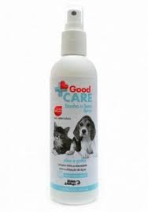

Solução para o pré-tratamento das otites e higiene de rotina das orelhas de cães e gatos. Solução otológica à base de ácido lático e ácido salicílico, indicada para cães e gatos na higiene de rotina das orelhas e no pré-tratamento das otites.
Good Care

O Limpa Lágrimas Mundo Animal Good Care para Cães e Gatos - 100 mL elimina manchas causadas por lágrimas ao redor dos olhos. Seu uso frequente previne a formação de novas manchas. Utilize uma gaze embebida para massagear a área manchada até a remoção inicial das manchas.